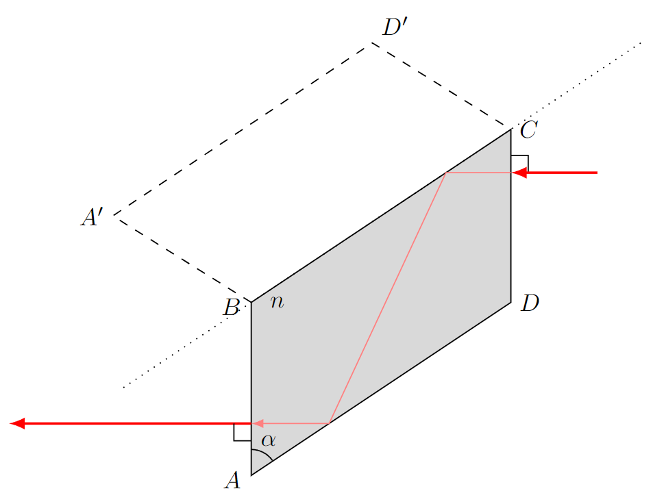
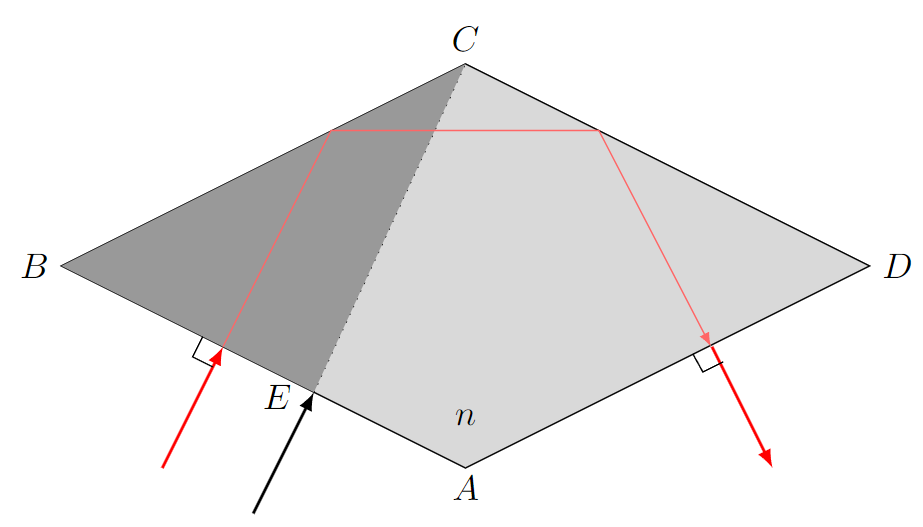
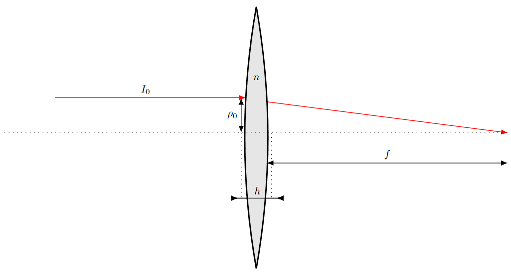

Y24 (2024) — English translation
In a plane electromagnetic wave, the volumetric energy densities of the electric and magnetic fields are the same, therefore: $$w_M=\cfrac{\mu_0\mu H^2}{2}=w_E=\cfrac{\varepsilon_0\varepsilon E^2}{2}{.} $$For фазовой velocity распространения wave have: $$v=\cfrac{c}{n}=\cfrac{1}{\sqrt{\mu_0\varepsilon_0\mu\varepsilon}}\Rightarrow n=\sqrt{\mu\varepsilon}{.} $$ Since $\mu=1$, for $H$ we have:
From Gauss’s theorem for magnetic field induction it follows:
Since there are no free charges at the boundary, it follows from Gauss’s theorem for the electric induction vector:
From the circulation theorem for the electric field strength it follows:
Since there are no external currents at the interface, from the circulation theorem for the magnetic field strength it follows:
Each of the fields in the medium $1$ is the sum of the fields in the incident and reflected wave, and the field in the medium $2$ is the field of the transmitted wave. Then each of the boundary conditions has the form: $$Ae^{i(\omega t-\vec{k}\vec{r})}+Be^{i(\omega_rt-\vec{k}_r\vec{r})}=Ce^{i(\omega_tt-\vec{k}_t\vec{r})}{.} $$Give condition must be выполнены in any moment time, from which follow relation: $$\omega_r=\omega_t=\omega{.} $$Also give condition must be выполнены in any point boundary раздела сред. Let $x$ – axis, directed on рис.1. and рис.2. вправо. Then for выполнения boundary condition in any point boundary раздела two сред must hold relation: $$k_{rx}=k_{tx}=k_x{.} $$Wave number be determined relation: $$k=\cfrac{\omega}{v}=\cfrac{\omega n}{c}{.} $$Hence obtain: $$k_x=\cfrac{\omega n_1\sin\theta}{c}=k_{rx}=\cfrac{\omega n_1\sin\theta_r}{c}=k_{tx}=\cfrac{\omega n_2\sin\theta_t}{c}{.} $$Hence follow relation: $$\theta=\theta_r\qquad n_1\sin\theta=n_2\sin\theta_t{.} $$
Let us write the boundary condition for the tangential component of the electric field strength: $$E_{\tau 1}=E_0(1+r_s)=E_{\tau 2}=E_0t_s\Rightarrow 1+r_s=t_s{.} $$Write boundary condition for тангенциальной component напряжённости magnetic field: $$H_{\tau 1}=n_1\sqrt{\varepsilon_0/\mu_0}(1-r_s)\cos\theta=H_{\tau 2}=n_2\sqrt{\varepsilon_0/\mu_0}t_s\cos\theta_t\Rightarrow n_1(1-r_s)\cos\theta=n_2t_s\cos\theta_t{.} $$From here we find:
Let us write the boundary condition for the tangential component of the electric field strength: $$E_{\tau 1}=E_0(1-r_p)\cos\theta=E_{\tau 2}=E_0t_p\cos\theta_t\Rightarrow (1-r_p)\cos\theta=t_p\cos\theta_t{.} $$Write boundary condition for тангенциальной component напряжённости magnetic field: $$H_{\tau 1}=n_1\sqrt{\varepsilon_0/\mu_0}(1+r_p)=H_{\tau 2}=n_2\sqrt{\varepsilon_0/\mu_0}t_p\Rightarrow n_1(1+r_p)=n_2t_p{.} $$From here we find:
$$r_p=\cfrac{n_2\cos\theta-n_1\cos\theta_t}{n_2\cos\theta+n_1\cos\theta_t}\qquad t_p=\cfrac{2n_1\cos\theta}{n_2\cos\theta+n_1\cos\theta_p}{.} $$
Let us introduce the axis $z$, directed vertically downwards. Then at an arbitrary point in space: $$E_t\sim \exp\left(i\left(\omega t-\vec{k}_t\vec{r}\right)\right)=\exp\left(i\left(\omega t-k_{tx}x-k_{tz}z\right)\right){.} $$Consider term $-ik_{tz}$: $$-ik_{tz}z=-ik_tz\cos\theta_t{.} $$At the same time for $\cos\theta_t$ have: $$\cos\theta_t=\pm\sqrt{1-\cfrac{n^2_1\sin^2\theta}{n^2_2}}=\pm \cfrac{i\sqrt{n^2_1\sin^2\theta-n^2_2}}{n_2}{.} $$Damping amplitude wave correspond sign $-$, therefore:
Taking into account the expression for $\cos\theta_t$ under full reflection, the expressions for $r_s$ and $r_p$ take the form: $$r_s=\cfrac{n_1\cos\theta+i\sqrt{n_1\sin^2\theta-n^2_2}}{n^2_1\cos\theta-i\sqrt{n^2_1\sin^2\theta-n^2_2}}\qquad r_p=\cfrac{n_2\cos\theta+\cfrac{in_1\sqrt{n^2_1\sin^2\theta-n^2_2}}{n_2}}{n_2\cos\theta-\cfrac{in_1\sqrt{n^2_1\sin^2\theta-n^2_2}}{n_2}}{.} $$Magnitude/modulus $r_s$ and $r_p$ equal единице in force equality magnitude/modulus вещественных and мнимых part numerator and denominator. Then they запись in показательной form look like following manner: $$r_s=\exp\left(2i\operatorname{arctg}\left(\cfrac{\sqrt{\sin^2\theta-(n_2/n_1)^2}}{\cos\theta}\right)\right){.} $$$$r_p=\exp\left(2i\operatorname{arctg}\left(\cfrac{(n_1/n_2)^2\sqrt{\sin^2\theta-(n_2/n_1)^2}}{\cos\theta}\right)\right){.} $$Thus:
Let's use the expression for the tangent of the difference: $$\operatorname{tg}(\alpha-\beta)=\cfrac{\operatorname{tg}\alpha-\operatorname{tg}\beta}{1+\operatorname{tg}\alpha\operatorname{tg}\beta}{.} $$Hence: $$\operatorname{tg}(\delta/2)=\cfrac{\operatorname{tg}(\delta_p/2)-\operatorname{tg}(\delta_s/2)}{1+\operatorname{tg}(\delta_p/2)\operatorname{tg}(\delta_s/2)}=\cfrac{\sqrt{\sin^2\theta-n^2_{21}}(n^{-2}_{21}-1)}{\cos\theta\left(1+\cfrac{(\sin^2\theta-n^2_{21})n^{-2}_{21}}{\cos^2\theta}\right)}{.} $$Transform obtain expression: $$\operatorname{tg}(\delta/2)=\cfrac{\cos\theta\sqrt{\sin^2\theta-n^2_{21}}(n^{-2}_{21}-1)}{\sin^2\theta(n^{-2}_{21}-1)}=\cfrac{\cos\theta\sqrt{\sin^2\theta-n^2_{21}}}{\sin^2\theta}{.} $$Thus:
The angle of incidence on the faces $BC$ and $AD$ will be equal to $\alpha$, therefore the condition must be satisfied: $$n\sin\alpha\leq 1{.} $$Thus:
At each total reflection, a phase shift of $\pi/4$ occurs between the $p$-polarization and the $s$-polarization, therefore: $$\operatorname{tg}(\delta/2)=\operatorname{tg}(\pi/8)=\sqrt{\cfrac{1-\cos\delta}{1+\cos\delta}}=\sqrt{\cfrac{\sqrt{2}-1}{\sqrt{2}+1}}=\sqrt{2}-1{.} $$Thus: $$\sqrt{2}-1=\cfrac{\cos\alpha'\sqrt{\sin^2\alpha'-(1/n)^2}}{\sin^2\alpha'}{.} $$Hence: $$\sin^4\alpha'(4-2\sqrt{2})-\sin^2\alpha'(1+(1/n)^2)+(1/n)^2=0 $$Solve square equation, obtain: $$\alpha'=\arcsin\sqrt{\cfrac{1+(1/n)^2\pm\sqrt{(1+(1/n)^2)^2-4(1/n)^2(4-2\sqrt{2})}}{8-4\sqrt{2}}}\approx 48{.}62^{\circ}{,}~54{.}62^{\circ}{.} $$Note, that both angle удовлетворяют condition, obtain in part $\mathrm{B1}$ and are suitable.
Let's use the sweep method. The Fresnel rhombus reverses the entire beam of rays subject to: $$BC\cos\alpha+AB\cos 2\alpha-AB=0\Rightarrow \cfrac{BC}{AB}=\cfrac{2\sin^2\alpha}{\cos\alpha}{.} $$Thus:

The angle of incidence on the faces $BC$ and $CD$ will be equal to $\alpha$, therefore the condition must be satisfied: $$n\sin\alpha\leq 1{.} $$Thus:
Since the number of reflections is two, the answer for this item is the same as the answer for item $\mathrm{B2}$:
The rays experience two total reflections if they first hit the $BC$ face. Let $E$ be a point on face $AB$, after passing which the ray hits point $C$. Then the position of the point $E$ is determined by the relation: $$BE/BC=BE/AB=\cos\alpha{.} $$For record value $\alpha$ maximum ratio area transverse cross-section beam to area face $AB$ equal ratio $BE/AB=\cos\alpha$. We have:

Let $\psi$ be the angle of refraction of the incident wave. Then $\psi$ is equal to the angle of incidence of the wave with wave vector $\vec{k'}$ on the interface between media with refractive indices $n_1$ and $n$, and the angle of refraction is equal to $\theta$. In the case of $s$-polarization we have: $$r_{1s}=\cfrac{n_1\cos\theta-n\cos\psi}{n_1\cos\theta+n\cos\psi}\qquad r'_{1s}=\cfrac{n\cos\psi-n_1\cos\theta}{n_1\cos\theta+n\cos\psi}{.} $$In the case of $p$-polarization have: $$r_{1p}=\cfrac{n\cos\theta-n_1\cos\psi}{n\cos\theta+n_1\cos\psi}\qquad r'_{1p}=\cfrac{n_1\cos\psi-n\cos\theta}{n\cos\theta+n_1\cos\psi}{.} $$Thus, in both case equality $r'_1=-r_1$ be выполненным. Determinable $t'_1$ in the case of both polarization: $$t'_{1s}=\cfrac{2n\cos\psi}{n_1\cos\theta+n\cos\psi}\qquad t'_{1p}=\cfrac{2n\cos\psi}{n_1\cos\psi+n\cos\theta}{.} $$At the same time for $t_{1s }$ and $t_{1s}$ have: $$t_{1s}=\cfrac{2n_1\cos\theta}{n_1\cos\theta+n\cos\psi}\qquad t_{1p}=\cfrac{2n_1\cos\theta}{n\cos\theta+n_1\cos\psi}{.} $$Hence: $$1-r^2_{1s}=\cfrac{4nn_1\cos\theta\cos\psi}{(n_1\cos\theta+n\cos\psi)^2}=\cfrac{2n_1\cos\theta}{n_1\cos\theta+n\cos\psi}\cdot\cfrac{2n\cos\psi}{n_1\cos\theta+n\cos\psi}=t_{1s}t'_{1s}{.} $$$$1-r^2_{1p}=\cfrac{4nn_1\cos\theta\cos\psi}{(n\cos\theta+n_1\cos\psi)^2}=\cfrac{2n_1\cos\theta}{n\cos\theta+n_1\cos\psi}\cdot\cfrac{2n\cos\psi}{n\cos\theta+n_1\cos\psi}=t_{1p}t'_{1p}{.} $$Thus, equality $1-r^2_1=t_1t'_1$ is completed.
If there were no wave with electric field strength $E'$, then the complex amplitudes $E^{(1)}_r$ and $E^{(1)}$ would be as follows: $$E^{(1)}_r=r_1E_1\qquad E^{(1)}=t_1E_1{.} $$If бы wave with напряжённостью electric field $E_1$ be absent, то complex amplitude $E^{(2)}_r$ and $E^{(2)}$ be бы following: $$E^{(2)}_r=r'_1E'\qquad E^{(2)}=t'_1E'{.} $$The resulting complex amplitudes of electric field strengths are found from the superposition principle:
Since point $O'$ is shifted relative to point $O$, the complex amplitudes $E_{O'}$, $E'_{O'}$ and $E_{O't}$ of the electric field strengths in waves with wave vectors $\vec{k'}$, $\vec{k}$ and $\vec{k}_t$ are shifted in phase relative to $E$, $E'$ and $E_t$. Considering a wave with wave vector $\vec{k}'$ as a reflected wave with wave vector $\vec{k}$, we obtain: $$r_2Ee^{-ikd\cos\psi}=E'e^{ikd\cos\psi}{.} $$Similarly consider wave with wave vector $\vec{k}_t$ as прошедшую wave with wave vector $\vec{k}$, obtain: $$t_2Ee^{-ikd\cos\psi}=E_te^{-ik_td\cos\varphi}{,} $$where $\varphi$ – refraction angle wave with wave vector $\vec{k }$. Write expression for $\cos\varphi$ and $\cos\psi$: $$\cos\psi=\cfrac{\sqrt{n^2-n^2_1\sin^2\theta}}{n}\qquad \cos\varphi=\cfrac{\sqrt{n^2_2-n^2_1\sin^2\theta}}{n_2}{.} $$Account for also relation: $$k_t=\cfrac{kn_2}{n}{.} $$Finally:
We will temporarily write the expression for $E'$ through $E$ in the following form: $$E'=r_2Ee^{-i\Delta}{.} $$Express $E$ through $E_1$: $$E=t_1E_1+r'_1E'=t_1E_1+Er'_1r_2e^{-i\Delta}\Rightarrow E=\cfrac{t_1E_1}{1-r'_1r_2e^{-i\Delta}}=\cfrac{t_1E_1}{1+r_1r_2e^{-i\Delta}}{.} $$Use expression for $E_r$: $$E_r=r_1E_1+t'_1E'=r_1E_1+\cfrac{E_1t_1t'_1r_2e^{-i\Delta}}{1+r_1r_2e^{-i\Delta}}=E_1\left(r_1+\cfrac{r_2(1-r^2_1)e^{-i\Delta}}{1+r_1r_2e^{-i\Delta}}\right){.} $$Thus: $$r=\cfrac{r_1+r_2e^{-i\Delta}}{1+r_1r_2e^{-i\Delta}} $$Substitute $\Delta$, we find:
At normal incidence, the $s$-polarization and $p$-polarization are equivalent to each other, so we will consider only the $s$-polarized wave. The reflection coefficients $r_1$ and $r_2$ are real, so for the reflection coefficient to be zero, the quantity $e^{-i\Delta}$ must be real. This is possible with: $$2kd=\pi N\Rightarrow d=\cfrac{\lambda N}{4}{.} $$Relate quantity $\lambda$ and $\lambda_1$: $$\lambda=vT=\cfrac{2\pi c}{\omega n}\Rightarrow \lambda_1n_1=\lambda n{.} $$
Let us analyze the case of odd $N$: $$r_1-r_2=0\Rightarrow r_1=\cfrac{n_1-n}{n_1+n}=r_2=\cfrac{n-n_2}{n+n_2}{,} $$from which: $$n_1n+n_1n_2-n^2-n_2n=n_1n-n_1n_2+n^2-nn_2\Rightarrow n=\sqrt{n_1n_2} $$Проанализируем case чётных $N$: $$r_1+r_2=0\Rightarrow n_1n+n_1n_2-n^2-n_2n=-n_1n+n_1n_2-n^2+nn_2\Rightarrow n=0{.} $$Thus, possible only case нечётных $N$, and in действительности quantity $d$ can take only following value: $$d=\cfrac{\lambda(1+2m)}{4}\sqrt{\cfrac{n_1}{n_2}}{.} $$Finally:
Let's use the result of point $\mathrm{C6}$:
Let us obtain an expression for the focal length of a biconvex lens with radii of curvature of the surface with radii of curvature $R_1$ and $R_2$, made of a substance with a refractive index $n$. Let's use the principle of tautochrony in the paraxial approximation: $$l_{опт}=nh+f=\cfrac{r^2}{2R_1}+n\left(h-\cfrac{r^2}{2R_1}-\cfrac{r^2}{2R_2}\right)+\cfrac{r^2}{2R_2}+f+\cfrac{r^2}{2f}{.} $$From независимости from $r$ obtain: $$\cfrac{1}{f}=(n-1)\left(\cfrac{1}{R_1}+\cfrac{1}{R_2}\right){.} $$Since $R_1=R_2=R$:

The emergence of a force acting on the lens is due to the rotation of the wave front after passing through the lens. Let $p_{x0}$ and $p_x$ be the projections of the photon momentum onto the $x$ axis before and after passing through the lens. Then the momentum $\Delta{p}_x$ transferred by the photon to the lens is: $$\Delta{p}_x=p_{x0}-p_x{.} $$Let wave fall on lens on distance $\rho$ from её axis. After passage lens wave front rotate on angle $\varphi\approx \rho/f$, therefore have: $$\Delta{p}_x(\rho)=p_{x0}(1-\cos\varphi)\approx\cfrac{p_{x0}\rho^2}{2f^2}{.} $$Let $n$ – concentration photon in fall on lens beam, and/but $E$ – energy one photon. Then force, act ring with internal and external radius $\rho$ and $\rho+d \rho$ constitute: $$dF_x=n_0c\cdot 2\pi \rho d\rho\cdot \Delta{p}_x(\rho)=\cfrac{\pi n_0p_{x0}c}{f^2}\cdot \rho^3d\rho=\cfrac{\pi n_0E}{f^2}\cdot \rho^3d\rho{.} $$At the same time $I_0=n_0cE$, therefore: $$F_x=\cfrac{\pi I_0}{f^2c}\int\limits_{0}^r\rho^3d\rho=\cfrac{\pi I_0r^4}{4f^2c}{.} $$Substitute $f$, we get: